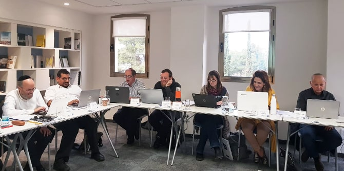

שני אבנשטיין, מומחית לחוכמת ההמון ולמיזמי תוכן חופשי, חוקרת את שילובן של ויקיפדיה והמיזמים-האחים שלה במסגרות חינוך ואקדמיה ככלי חינוכי. המפגש, שנערך ביחידת בוגרי מנדל, נפתח בהרצאתה לשנות את העולם בנעלי בית על ויקיפדיה ומיזמי קרן ויקימדיה, הפועלת לפיתוח ולהפצה של תוכן חופשי בשפות שונות. הכרנו את ערכי היסוד של תנועת ויקימדיה העולמית בתחום הפצת הידע והנגשתו, ולמדנו על המיזמים השונים ועל הפעילות לחיזוק העולם המתפתח על-ידי גישה לידע חופשי ושימור ידע תרבותי על סף הכחדה. למדנו על פעילותה של ויקימדיה לשיפור איכות המידע ודיוקו באמצעות פיתוח קשרים עם מוסדות חינוך ותרבות, במטרה להביא את המומחיות והניסיון שאצורים בגופים אלו לוויקיפדיה, והתוודענו למיזמי החינוך שלה בארץ ובעולם, למיזמי מדע ורפואה, למיזמי נשים ועוד.

ויקיפדיה (שהוקמה ב-2001, באנגלית) היא האנציקלופדיה הגדולה ביותר שנוצרה אי-פעם, והיא מושתתת כולה על עבודת מתנדבים המחויבים לכללים מוגדרים מראש. שימוש מושכל באנציקלופדיה זו יכול להעניק לבוגרים גישה למקור ידע עצום ולתהליכי למידה והוראה מתקדמים שכבר מתקיימים במספר מוסדות אקדמיה וחינוך בארץ ובעולם. על-פי דירוג אלכסה, ויקיפדיה היא האתר הלא-מסחרי (non-profit) הנצפה ביותר בעולם (והחמישי הנצפה בכלל): כמיליארד בני אדם קוראים בוויקיפדיה מדי חודש(!), וככזו, יש לה פוטנציאל עצום לתרום להרחבת מעגלי ההשפעה של הבוגרים ולהיות פלטפורמה להפצת הידע המקצועי שלהם.
{kind=link}